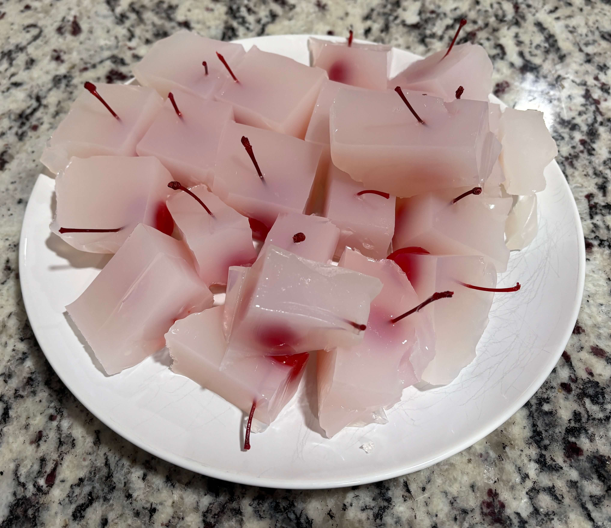

Home
Lychee Martini Jello Shots

Yields 30-36 cubes in an 8x8 baking pan
Ingredients
- 2.1 cups calpico lychee non-carbonated drink
- 1 cup vodka
- 1/2 cup dry vermouth
- 3/4 cup cold water (for blooming)
- 3 tbsp fresh lime juice
- 4 tbsp + 2 tsp powdered gelatin (approx 6 packets)
- 30-36 maraschino or luxardo cherries with stems on (drained and dried)
- neutral oil
Steps
- Lightly grease your 8x8 pan with a neutral oil. For easiest removal, line it with parchment paper so that it hangs over the sides
- Pour the 3/4 cup cold water into a small bowl. Sprinkle the gelatin evenly over the surface. Let it sit for 5 minutes until it looks like thick applesauce
- In a saucepan over low heat, combine the calpico lychee and lime juuice. Do not let it boil, as the lime and heat can curdle the dairy
- Add the bloomed gelatin to the warm calpico. Stir gently until the gelatin is completely melted and the liquid is smooth
- Remove from heat. Stir in the vodka and dry vermouth
- Pour about 1/3 of the mixture into your glass pan. Refridgerate for 15-20 minutes until it is tacky but not liquid
- Place your cherries in a grid pattern on the tacky layer
- Gently pour the remaining mixture over the cherries. Refrigerate for at least 4-6 hours (overnight is best)
- Run a knife around the edge, lift the parchment sling, and slice into cubes using the cherries as your guide.
Tips
- Dip your knife in hot water and wipe it clean before every single slice
- When unmolding from the pan you can place the bottom in warm water to loosen the mold until you can pull it out using the parchment paper. Only put it in hot water for 5-10s so it doesn't turn into liquid
- Optionally add edible glitter to the top of the jello
- Alternatively you can use 2 cups lychee juice and 5 tbsp granulated sugar instead of the calpico drink for a clear look